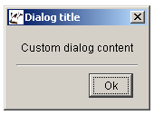

Class JDefaultDialog
- All Implemented Interfaces:
java.awt.event.ActionListener,java.awt.event.WindowListener,java.awt.image.ImageObserver,java.awt.MenuContainer,java.io.Serializable,java.util.EventListener,javax.accessibility.Accessible,javax.swing.RootPaneContainer,javax.swing.WindowConstants
- Direct Known Subclasses:
JAboutBox,JCustomColorMapChooser,JDateChooser,JTimeChooser
public class JDefaultDialog
extends javax.swing.JDialog
implements java.awt.event.ActionListener, java.awt.event.WindowListener
JDefaultDialog class is a baseclass for creating arbitrary dialog boxes.
Note that a valid I18NL10N database must be available!
There are three types of dialog boxes available:
"Ok" dialog box

"Ok/Cancel" dialog box

Custom dialog box

Typically, JDefaultDialog is subclassed, with several methods overridden.
These methods control both the visual layout of the dialog box (custom dialog title and
custom content area) and the actions that need to be taken upon user input. The dialog
boxes can be modal or modeless, and have a fixed size or be resizable.
When the dialog box is shown, it is placed in the middle of the parent's frame.
The overridable methods are called in the following order:
initialiseClass(Object[])setupWindowTitle()setupInitialDialogSize()setupMainPanel(JPanel)actionPerformed(ActionEvent)
The result of an "Ok/Cancel" type dialog box should be queried using the
isCancelled() method.
Important remark
Initialisation of member fields in the subclass is accomplished by overriding the
initialiseClass(Object[]) method; the parameters are specified as an array of
Objects. These parameters are passed to the subclass in the call to the
constructor, for example:
MyDialogClass myDialogObject =
So the
new MyDialogClass(
parentComponent,
JDefaultDialog.EModality.kModal,
JDefaultDialog.ESize.kResizable,
JDefaultDialog.EType.kOkCancel,
new Object[] {object1,object2};
Object[] array is constructed using new Object[]
{object1,object2}. If no parameters are to be passed, you should specify
null for the array.
Note that there are two callback functions provided for when the ok- and cancel-buttons are selected: okSelected() and cancelSelected().
- Version:
- 06/08/2019
- Author:
- Sven Maerivoet
- See Also:
- Serialized Form
-
Nested Class Summary
Nested Classes Modifier and Type Class Description static classJDefaultDialog.EModalityUseful constants to specify a modal or modelss dialog box.static classJDefaultDialog.ESizeUseful constants to specify a fixed or resizable dialog box.static classJDefaultDialog.ETypeUseful constants to specify an "Ok", "Ok/Cancel" or custm type dialog box.Nested classes/interfaces inherited from class javax.swing.JDialog
javax.swing.JDialog.AccessibleJDialogNested classes/interfaces inherited from class java.awt.Dialog
java.awt.Dialog.AccessibleAWTDialog, java.awt.Dialog.ModalExclusionType, java.awt.Dialog.ModalityTypeNested classes/interfaces inherited from class java.awt.Window
java.awt.Window.AccessibleAWTWindow, java.awt.Window.TypeNested classes/interfaces inherited from class java.awt.Container
java.awt.Container.AccessibleAWTContainerNested classes/interfaces inherited from class java.awt.Component
java.awt.Component.AccessibleAWTComponent, java.awt.Component.BaselineResizeBehavior, java.awt.Component.BltBufferStrategy, java.awt.Component.FlipBufferStrategy -
Field Summary
Fields inherited from class javax.swing.JDialog
accessibleContext, rootPane, rootPaneCheckingEnabledFields inherited from class java.awt.Dialog
DEFAULT_MODALITY_TYPEFields inherited from class java.awt.Component
BOTTOM_ALIGNMENT, CENTER_ALIGNMENT, LEFT_ALIGNMENT, RIGHT_ALIGNMENT, TOP_ALIGNMENTFields inherited from interface java.awt.image.ImageObserver
ABORT, ALLBITS, ERROR, FRAMEBITS, HEIGHT, PROPERTIES, SOMEBITS, WIDTHFields inherited from interface javax.swing.WindowConstants
DISPOSE_ON_CLOSE, DO_NOTHING_ON_CLOSE, EXIT_ON_CLOSE, HIDE_ON_CLOSE -
Constructor Summary
Constructors Constructor Description JDefaultDialog(javax.swing.JFrame applicationFrame, JDefaultDialog.EModality modality, JDefaultDialog.ESize size, JDefaultDialog.EType type, java.lang.Object[] parameters)Constructs aJDefaultDialogobject with the specified characteristics. -
Method Summary
Modifier and Type Method Description voidactionPerformed(java.awt.event.ActionEvent e)The dialog box's action listener.voidactivate()Displays the dialog box on the screen, thereby 'activating' it.protected voidcancelSelected()A callback function for when the cancel-button is selected.voiddisableAutoPositioning()Disables autopositioning of the dialog.protected voidinitialiseClass(java.lang.Object[] parameters)Allows custom initialisation of a subclass's member fields.protected voidinitialiseDuringActivation()Allows custom initialisation to be performed during the dialog box's reactivation.booleanisCancelled()Indicates whether or not the user has cancelled the dialog box.booleanisShown()Returns whether or not the dialog is shown.protected voidokSelected()A callback function for when the ok-button is selected.protected java.awt.DimensionsetupInitialDialogSize()Sets up the initial screen size of the dialog box.protected voidsetupMainPanel(javax.swing.JPanel mainPanel)Sets up the custom content in the dialog box.protected java.lang.StringsetupWindowTitle()Sets up the window title of the dialog box.protected voidupdateGUI()Updates the main GUI controls.voidwindowActivated(java.awt.event.WindowEvent e)A method from the dialog box's window listener.voidwindowClosed(java.awt.event.WindowEvent e)A method from the dialog box's window listener.voidwindowClosing(java.awt.event.WindowEvent e)A method from the dialog box's window listener.voidwindowDeactivated(java.awt.event.WindowEvent e)A method from the dialog box's window listener.voidwindowDeiconified(java.awt.event.WindowEvent e)A method from the dialog box's window listener.voidwindowIconified(java.awt.event.WindowEvent e)A method from the dialog box's window listener.voidwindowOpened(java.awt.event.WindowEvent e)A method from the dialog box's window listener.Methods inherited from class javax.swing.JDialog
addImpl, createRootPane, dialogInit, getAccessibleContext, getContentPane, getDefaultCloseOperation, getGlassPane, getGraphics, getJMenuBar, getLayeredPane, getRootPane, getTransferHandler, isDefaultLookAndFeelDecorated, isRootPaneCheckingEnabled, paramString, processWindowEvent, remove, repaint, setContentPane, setDefaultCloseOperation, setDefaultLookAndFeelDecorated, setGlassPane, setJMenuBar, setLayeredPane, setLayout, setRootPane, setRootPaneCheckingEnabled, setTransferHandler, updateMethods inherited from class java.awt.Dialog
addNotify, getModalityType, getTitle, isModal, isResizable, isUndecorated, setBackground, setModal, setModalityType, setOpacity, setResizable, setShape, setTitle, setUndecorated, setVisible, toBackMethods inherited from class java.awt.Window
addPropertyChangeListener, addPropertyChangeListener, addWindowFocusListener, addWindowListener, addWindowStateListener, createBufferStrategy, createBufferStrategy, dispose, getBackground, getBufferStrategy, getFocusableWindowState, getFocusCycleRootAncestor, getFocusOwner, getFocusTraversalKeys, getIconImages, getInputContext, getListeners, getLocale, getModalExclusionType, getMostRecentFocusOwner, getOpacity, getOwnedWindows, getOwner, getOwnerlessWindows, getShape, getToolkit, getType, getWarningString, getWindowFocusListeners, getWindowListeners, getWindows, getWindowStateListeners, isActive, isAlwaysOnTop, isAlwaysOnTopSupported, isAutoRequestFocus, isFocusableWindow, isFocusCycleRoot, isFocused, isLocationByPlatform, isOpaque, isShowing, isValidateRoot, pack, paint, processEvent, processWindowFocusEvent, processWindowStateEvent, removeNotify, removeWindowFocusListener, removeWindowListener, removeWindowStateListener, setAlwaysOnTop, setAutoRequestFocus, setBounds, setBounds, setCursor, setFocusableWindowState, setFocusCycleRoot, setIconImage, setIconImages, setLocation, setLocation, setLocationByPlatform, setLocationRelativeTo, setMinimumSize, setModalExclusionType, setSize, setSize, setType, toFrontMethods inherited from class java.awt.Container
add, add, add, add, add, addContainerListener, applyComponentOrientation, areFocusTraversalKeysSet, doLayout, findComponentAt, findComponentAt, getAlignmentX, getAlignmentY, getComponent, getComponentAt, getComponentAt, getComponentCount, getComponents, getComponentZOrder, getContainerListeners, getFocusTraversalPolicy, getInsets, getLayout, getMaximumSize, getMinimumSize, getMousePosition, getPreferredSize, invalidate, isAncestorOf, isFocusCycleRoot, isFocusTraversalPolicyProvider, isFocusTraversalPolicySet, list, list, paintComponents, print, printComponents, processContainerEvent, remove, removeAll, removeContainerListener, setComponentZOrder, setFocusTraversalKeys, setFocusTraversalPolicy, setFocusTraversalPolicyProvider, setFont, transferFocusDownCycle, validate, validateTreeMethods inherited from class java.awt.Component
add, addComponentListener, addFocusListener, addHierarchyBoundsListener, addHierarchyListener, addInputMethodListener, addKeyListener, addMouseListener, addMouseMotionListener, addMouseWheelListener, checkImage, checkImage, coalesceEvents, contains, contains, createImage, createImage, createVolatileImage, createVolatileImage, disableEvents, dispatchEvent, enableEvents, enableInputMethods, firePropertyChange, firePropertyChange, firePropertyChange, firePropertyChange, firePropertyChange, firePropertyChange, firePropertyChange, firePropertyChange, firePropertyChange, getBaseline, getBaselineResizeBehavior, getBounds, getBounds, getColorModel, getComponentListeners, getComponentOrientation, getCursor, getDropTarget, getFocusListeners, getFocusTraversalKeysEnabled, getFont, getFontMetrics, getForeground, getGraphicsConfiguration, getHeight, getHierarchyBoundsListeners, getHierarchyListeners, getIgnoreRepaint, getInputMethodListeners, getInputMethodRequests, getKeyListeners, getLocation, getLocation, getLocationOnScreen, getMouseListeners, getMouseMotionListeners, getMousePosition, getMouseWheelListeners, getName, getParent, getPropertyChangeListeners, getPropertyChangeListeners, getSize, getSize, getTreeLock, getWidth, getX, getY, hasFocus, imageUpdate, isBackgroundSet, isCursorSet, isDisplayable, isDoubleBuffered, isEnabled, isFocusable, isFocusOwner, isFontSet, isForegroundSet, isLightweight, isMaximumSizeSet, isMinimumSizeSet, isPreferredSizeSet, isValid, isVisible, list, list, list, paintAll, prepareImage, prepareImage, printAll, processComponentEvent, processFocusEvent, processHierarchyBoundsEvent, processHierarchyEvent, processInputMethodEvent, processKeyEvent, processMouseEvent, processMouseMotionEvent, processMouseWheelEvent, remove, removeComponentListener, removeFocusListener, removeHierarchyBoundsListener, removeHierarchyListener, removeInputMethodListener, removeKeyListener, removeMouseListener, removeMouseMotionListener, removeMouseWheelListener, removePropertyChangeListener, removePropertyChangeListener, repaint, repaint, repaint, requestFocus, requestFocus, requestFocus, requestFocus, requestFocusInWindow, requestFocusInWindow, requestFocusInWindow, revalidate, setComponentOrientation, setDropTarget, setEnabled, setFocusable, setFocusTraversalKeysEnabled, setForeground, setIgnoreRepaint, setLocale, setMaximumSize, setMixingCutoutShape, setName, setPreferredSize, toString, transferFocus, transferFocusBackward, transferFocusUpCycleMethods inherited from class java.lang.Object
clone, equals, getClass, hashCode, notify, notifyAll, wait, wait, wait
-
Constructor Details
-
JDefaultDialog
public JDefaultDialog(javax.swing.JFrame applicationFrame, JDefaultDialog.EModality modality, JDefaultDialog.ESize size, JDefaultDialog.EType type, java.lang.Object[] parameters)Constructs aJDefaultDialogobject with the specified characteristics.- Parameters:
applicationFrame- the frame in which this dialog box is to be displayedmodality- anEModalityflag to indicate if the dialog box should be modal or modelesssize- anESizeflag indicating whether or not the dialog box should be resizabletype- the type of the dialog box ("Ok", "Ok/Cancel" or custom)parameters- an array of objects which are passed to theinitialiseClass(Object[])method- See Also:
JDefaultDialog.EModality,JDefaultDialog.ESize,JDefaultDialog.EType
-
-
Method Details
-
actionPerformed
public void actionPerformed(java.awt.event.ActionEvent e)The dialog box's action listener.Note that when overriding this method in a subclass, its parent should explicitly be called in order to guarantee the correct processing of the user's input ("Ok" and "Ok/Cancel" type of dialog boxes):
super.actionPerformed(e);
// rest of method's code- Specified by:
actionPerformedin interfacejava.awt.event.ActionListener- Parameters:
e- theActionEventthat is received
-
windowActivated
public final void windowActivated(java.awt.event.WindowEvent e)A method from the dialog box's window listener.Note that this method cannot be overridden!
- Specified by:
windowActivatedin interfacejava.awt.event.WindowListener- Parameters:
e- theWindowEventthat is received
-
windowClosed
public final void windowClosed(java.awt.event.WindowEvent e)A method from the dialog box's window listener.Note that this method cannot be overridden!
- Specified by:
windowClosedin interfacejava.awt.event.WindowListener- Parameters:
e- theWindowEventthat is received
-
windowClosing
public final void windowClosing(java.awt.event.WindowEvent e)A method from the dialog box's window listener.Note that this method cannot be overridden!
- Specified by:
windowClosingin interfacejava.awt.event.WindowListener- Parameters:
e- theWindowEventthat is received
-
windowDeactivated
public final void windowDeactivated(java.awt.event.WindowEvent e)A method from the dialog box's window listener.Note that this method cannot be overridden!
- Specified by:
windowDeactivatedin interfacejava.awt.event.WindowListener- Parameters:
e- theWindowEventthat is received
-
windowDeiconified
public final void windowDeiconified(java.awt.event.WindowEvent e)A method from the dialog box's window listener.Note that this method cannot be overridden!
- Specified by:
windowDeiconifiedin interfacejava.awt.event.WindowListener- Parameters:
e- theWindowEventthat is received
-
windowIconified
public final void windowIconified(java.awt.event.WindowEvent e)A method from the dialog box's window listener.Note that this method cannot be overridden!
- Specified by:
windowIconifiedin interfacejava.awt.event.WindowListener- Parameters:
e- theWindowEventthat is received
-
windowOpened
public final void windowOpened(java.awt.event.WindowEvent e)A method from the dialog box's window listener.Note that this method cannot be overridden!
- Specified by:
windowOpenedin interfacejava.awt.event.WindowListener- Parameters:
e- theWindowEventthat is received
-
isCancelled
public boolean isCancelled()Indicates whether or not the user has cancelled the dialog box.For "Ok" and "Custom" type dialog boxes, this method always returns
false; note that it can be overridden in a subclass if custom behavior is needed (this may desirable for "Custom" type dialog boxes).For "Ok/Cancel" type dialog boxes, this method only returns
falseif the user has selected the "Ok" button.- Returns:
falsefor "Ok" and "Custom" type dialog boxes, and "Ok/Cancel" type dialog boxes if the user has selected the "Ok" button
-
activate
public final void activate()Displays the dialog box on the screen, thereby 'activating' it.- See Also:
initialiseDuringActivation()
-
isShown
public final boolean isShown()Returns whether or not the dialog is shown.Note that this method cannot be overridden!
- Returns:
trueif the dialog is shown,falseotherwise
-
disableAutoPositioning
public final void disableAutoPositioning()Disables autopositioning of the dialog. -
initialiseClass
protected void initialiseClass(java.lang.Object[] parameters)Allows custom initialisation of a subclass's member fields.Note that the caller should specify
nullif no parameters are specified.- Parameters:
parameters- an array ofObjects
-
setupWindowTitle
protected java.lang.String setupWindowTitle()Sets up the window title of the dialog box.In order to obtain a custom dialog title, the caller should override this method (it returns
nullin the baseclass).- Returns:
- the window title of the dialog box
-
setupInitialDialogSize
protected java.awt.Dimension setupInitialDialogSize()Sets up the initial screen size of the dialog box.In order to obtain a custom size for the dialog box, the caller should override this method (it returns
nullin the baseclass).- Returns:
- the initial screen size of the dialog box
-
setupMainPanel
protected void setupMainPanel(javax.swing.JPanel mainPanel)Sets up the custom content in the dialog box.A subclass should typically create labels, inputfields, ... in the dialog boxes main panel, by overriding this method.
Note that the
mainPanelobject is already constructed!- Parameters:
mainPanel- the area of the dialog box that is reserved for custom content
-
updateGUI
protected void updateGUI()Updates the main GUI controls. -
initialiseDuringActivation
protected void initialiseDuringActivation()Allows custom initialisation to be performed during the dialog box's reactivation.- See Also:
activate()
-
okSelected
protected void okSelected()A callback function for when the ok-button is selected. -
cancelSelected
protected void cancelSelected()A callback function for when the cancel-button is selected.
-